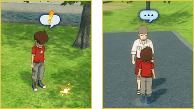
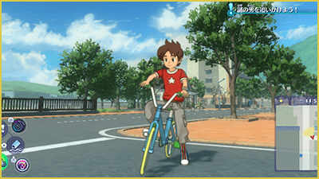
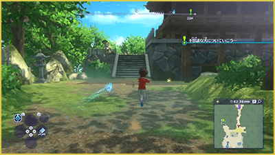
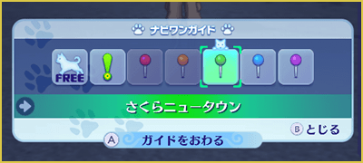
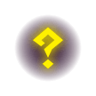
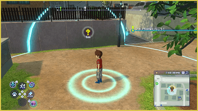

Acciones
Acciones básicas
| Desplazarse | Muévete en la dirección en la que inclines el stick izquierdo. Si lo inclinas ligeramente, caminarás. Además, si te mueves mientras mantienes pulsado Ⓑ, correrás a toda velocidad. |
|---|---|
| Saltar | Pulsa brevemente Ⓑ para saltar. También puedes saltar mientras corres. |
| Controlar la cámara | Inclina el stick derecho para cambiar la posición de la cámara (punto de vista). Pulsa L para que la cámara vuelva a colocarse detrás del jugador. |
Examinar / Hablar
Cuando aparezca un bocadillo con "!", pulsa el botón A para examinar o recoger lo que haya en ese lugar.
Del mismo modo, si pulsas Ⓐ delante de una persona que tenga un bocadillo con "?", "..." u otro indicador similar, podrás hablar con ella.

Desplazarse en bicicleta
Una vez que tengas una bicicleta, pulsa arriba en la cruceta la para subirte a ella. (Hay ciertas zonas del mapa en las que no puedes montar en bicicleta.) Pulsa de nuevo la cruceta hacia abajo para bajarte.

Guía de Naviwoof
Mientras avanzas en una misión, Naviwoof aparecerá por el mapa y te indicará hacia dónde debes dirigirte. Si sigues la dirección en la que se desplaza Naviwoof, podrás avanzar por la historia sin problemas.

Cambiar el destino de la guía
Pulsa la cruceta hacia la izquierda para abrir el menú de la guía de Naviwoof. Selecciona uno de los iconos y pulsa Ⓐ para confirmar. Después, pulsa Ⓑ para cerrar el menú y Navi One cambiará su destino en consecuencia.

| Paseo | Hace que Naviwoof dé un paseo sin establecer ningún destino en particular. |
|---|---|
| Misión | Naviwoof te guiará hacia el siguiente destino de la misión actual. Además, el color del icono cambia dependiendo del tipo de misión. |
| Marcador del mapa | Naviwoof te guiará hacia el lugar que hayas marcado en el mapa. Hay marcadores de 5 colores: rojo, naranja, verde, azul y morado. |
Navegación automática
Pulsa la cruceta hacia arriba para activar la navegación automática.
El jugador se desplazará automáticamente hacia el destino indicado por Naviwoof.
Radar Yo-kai
Pulsa el botón del stick derecho para activar el radar Yo-kai, que permite encontrar Yo-kai, objetos y otras cosas ocultas en los alrededores. 
Los Yo-kai aparecen con su icono correspondiente, mientras que el resto de elementos aparecen con otro icono

Guardar la partida
Pulsa la cruceta hacia la derecha para abrir la aplicación "Diario", desde donde puedes guardar tu progreso. Ten en cuenta que en algunos lugares no es posible guardar la partida.